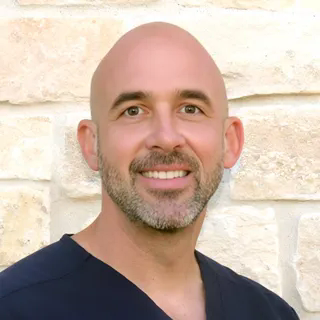

Meet the team
The chiropractors, acupuncturist and nurse practitioner at our Georgetown East office. Names, titles and bios as they appear on the current Georgetown site.

R. Matthew George, D.C.
At our practice, we are committed to providing the highest quality medical and chiropractic care. If you have any questions or concerns, feel free to contact me directly at drgeorge@anthonychiro.com.
Dr. George earned his Bachelor of Science in Biology from Marshall University in West Virginia in 2006. He continued his education at Parker College of Chiropractic, where he earned a second bachelor's degree in Anatomy and his Doctorate in Chiropractic Care in 2010.
In 2012, Dr. George joined Anthony Medical & Chiropractic Center and has grown with the company ever since. Today, he serves as an owning provider and the Chief Executive Officer, dedicated to enhancing patient care and outcomes.
A passionate advocate for health and wellness, Dr. George enjoys staying active with trail running and participating in community races and events. He also finds joy in golfing with family and friends. In addition to chiropractic care, Dr. George has a strong interest in computer science and is committed to leveraging technology to improve healthcare delivery and patient well-being.
When he's not working, Dr. George is a proud family man who treasures quality time with his wife and two children, creating lasting memories together. Outside of work and family, he has a deep love for concerts and live music, always seeking the next opportunity to enjoy the vibrant energy of a great performance.
Andrew Yakubik, D.C.
Dr. Yakubik completed his Bachelor of Science in exercise science from Auburn University in 2015. After completing his undergraduate degree from Auburn University, Dr. Yakubik attended Parker University where he received his Doctorate in Chiropractic, graduating Cum Laude.
Dr. Yakubik loves to spend time with his family. If he is not at the clinic or enjoying hikes with his wife, son, and Dog (Watson) you will find him on the golf course. Dr. Yakubik is very passionate about his patient’s care and well-being. Each patient has individual goals about their health. Dr. Yakubik makes it his mission that every patient meets and exceeds their expectations.
Ben Lanz, D.C.
During his childhood, Ben Lanz D.C. lived in many places due to his father's work as a geologist. He was always drawn to nature and its beauty, exploring the bayous in south Houston, climbing mountains in Alaska, and surviving harsh subarctic winters in Russia.
During these early experiences, I developed a curiosity about biology and how things work. In addition to his interest in how things work, Dr. Lanz also competed as a mountain biker and road cyclist during his junior years at Fort Lewis College in Durango, Colorado. During this time, he was introduced to chiropractic and its benefits. As a result, he pursued an undergraduate degree in human biology and a doctorate degree in chiropractic at the University of Western States in Portland, OR.
Dr. Lanz enjoys spending time with his wife and three kids, weightlifting, mountain biking, anything outdoors, and traveling! Still to this day, he is passionate about understanding how things work and how it relates to his patients' success and pain-free lives.
Dr. James
Dr. James has been practicing Chinese Medicine and acupuncture since 2003 in Taiwan and has been practicing in Texas since 2012. He the 4th generation in his family to practice Chinese medicine, spanning over 150 years of passing down experience and knowledge!
Dr. James graduated from Texas Health and Science University in 2012. During his studies, he had the most clinical hours of practice and was known as the student in practice with the most patient recommendations. Most of his patients show significant improvement after the first treatment session.
Dr. James is specializes in nerve damage, such as neuropathy, pinched nerve, trigeminal neuralgia, shingles, sciatica, carpal tunnel, abnormal tingling and numbness sensation; also in internal medicine, such as circulation, stress, digestive dysfunction, female issue, infertility, low energy, obesity, fibromyalgia.
Not only does Dr. James inherit the full knowledge of the most ancient medical science in the world but he’s continued his education of modern health information in order to better provide treatment to his patients. It is his philosophy that the treatment is more than a “treatment.” The goal of his practice is to give patients a healthier and better life quality in the most natural way, such as through acupuncture, herbal medicine and balance nutrition.
Angela Krego, FNP-C
Angela Krego is a board-certified Family Nurse Practitioner with a strong background in critical care and interventional cardiology. She earned her Bachelor of Science in Nursing from California State University Channel Islands in 2015 and spent ten years as a Registered Nurse, gaining extensive experience in high-acuity settings.
In 2024, she returned to CSU Channel Islands to complete her Master’s degree in Family Medicine, further expanding her ability to provide comprehensive, patient-centered care.
With a passion for functional medicine, Angela relocated to Texas in early 2025, where she continues to help patients live healthier, more balanced lives through a personalized approach to wellness.
Outside the clinic, Angela is a proud dog mom to two lovable pups, an avid Disneyland enthusiast, and enjoys traveling frequently to spend time with her family on both coasts of the U.S.
Call our Georgetown office
(512) 630-0060101 Cooperative Way #235, Georgetown, TX 78626. Free insurance verification. Se Habla Español.